Plot Snippets for Exploratory (and some Explanatory) Analyses
Foreword
- Output options: the ‘tango’ syntax and the ‘readable’ theme.
- Code snippets and results.
- Some data might necessitate more specialized packages.
- For explaining data, presenting results, reporting and publishing, we can generate prettier graphics with
ggvisorggplot2, and interactive packages such asshiny.
Plotting Packages¶
Graphics:
mapsfor grids and mapping.diagramfor flow charts.plotrixfor ternary, polar plots.gplots.pixmap,png,rtiff,ReadImages,EBImage,RImageJ.leaflet.
Grid:
vcdfor mosaic, ternary plots.grImportfor vectors.ggplot2and extensions.latticeandlatticeExtra.gridBase.
Devices:
JavaGD.Cairo.tikzDevice.
Interactive:
rgl.ggvis.iplots.rggobi.
Others:
ashfor density plots.clusterfor dendrograms.copulafor multivariate analyses.corrplotfor correlations.compositionsfor geometries, ternary plots.extracatfor missing values.soiltexturefor ternary plots and more.KernSmoothfor histograms-density plots.openairfor polar, circular plots.smfor density plots.carfor scatter plots.vioplotfor boxplots.vcdfor mosaic plots and multivariate analyses.hexbinfor scatter plots.scatterplot3dfor 3D scatter plots.clusterfor dendrograms.shinyfor interactive plots.ggvis.
Data Type & Dataset¶
Data Types¶
- continuous vs categorical (or discrete).
- continuous: float, x-y-z, 3D, map coordinates, trianguar, lat-long, polar, degree-distance, angle-vector.
- categorical: integer, binary, dichotomic, dummy, factor, ordinal (ordered).
Continuous variable characteristics:
- asymmetry.
- outliers.
- multimodality.
- gaps, missing values.
- heaping, redundance.
- rounding, integer.
- impossibilities, anomalies.
- errors.
- …
Categorical variable characteristics:
- unexpected pattern of results.
- uneven distribution.
- extra categories.
- unbalanced experiments.
- large numbers of categories.
- NA, errors, missings…
- nominal: no fixed order.
- ordinal: fixed order (scale of 1 to 5).
- discrete: counts, integers.
- dependencies, correlation, associations.
- causal relationships, outliers, groups, clusters, gaps, barriers, conditional relationship.
- …
Univariate main plots:
- histogram.
- density.
- qqmath chart.
- box & whickers chart.
- bar chart.
- dot.
Bivariate main plots:
- xy chart.
- qq chart.
Trivariate main plots:
- cloud.
- wireframe.
- countour.
- level.
Multivariate main plots:
- sploms.
- parallel charts (coordinate).
Specialized plots:
- frequencies, crosstabs: bar charts, mosaic plots, association plots.
- correlations: sploms, pairs, correlograms.
- t-tests, non-parrametric tests of group differences: box plot, density plot.
- regression: scatter plot.
- ANOVA: box plots, line plots.
Functions¶
Create a new variable
1 2 | iris2 <- within(iris, area <- Petal.Width*Petal.Length) head(iris2, 3) |
1 2 3 4 | ## Sepal.Length Sepal.Width Petal.Length Petal.Width Species area ## 1 5.1 3.5 1.4 0.2 setosa 0.28 ## 2 4.9 3.0 1.4 0.2 setosa 0.28 ## 3 4.7 3.2 1.3 0.2 setosa 0.26 |
1 2 | area <- with(iris, area <- Petal.Width*Petal.Length) head(area, 3) |
1 | ## [1] 0.28 0.28 0.26 |
Dataset¶
For most examples, we use the mtcars dataset.
Prepare the dataset.
1 | attach(mtcars) |
Get data attached to a package (an example).
1 | data(gvhd10, package = 'latticeExtra') |
The Basic Package¶
Basic Plots, Options & Parameters¶
Standardize the parameters (an example)
1 2 | # color and tick mark text orientation par(col = 'black', las = 1) |
Grid and layout
One plot.
1 | plot(hp, mpg, xlab = 'horsepower', ylab = 'miles per gallon') |

A grid of plots.
1 2 3 4 5 6 7 8 9 | par(mfrow = c(2, 1)) plot(mpg, hp, ylab = 'horsepower', xlab = 'miles per gallon') boxplot(mpg ~ cyl, xlab = 'mile per gallon', ylab = 'number of cylinders', horizontal = TRUE) par(mfrow = c(1, 2)) plot(mpg, hp, ylab = 'horsepower', xlab = 'miles per gallon') boxplot(mpg ~ cyl, xlab = 'mile per gallon', ylab = 'number of cylinders', horizontal = TRUE) |

1 | par(mfrow = c(1, 1)) |
Other grids.
1 2 3 4 5 | layout(matrix(c(1,1,2,3), 2, 2, byrow = TRUE)) plot(mpg, xlab = 'observations', ylab = 'miles per gallon') plot(hp, mpg, xlab = 'horsepower', ylab = 'miles per gallon') boxplot(mpg ~ cyl, ylab = 'mile per gallon', xlab = 'number of cylinders') |

1 2 | # view matrix(c(1,2,1,3), 2, 2, byrow = TRUE) |
1 2 3 | ## [,1] [,2] ## [1,] 1 2 ## [2,] 1 3 |
1 2 3 4 5 | layout(matrix(c(1,2,1,3), 2, 2, byrow = TRUE)) hist(wt) hist(mpg) hist(disp) |

1 2 3 4 5 | layout(matrix(c(1,1,2,3), 2, 2, byrow = TRUE), widths = c(3,1), heights = c(1,2)) hist(wt) hist(mpg) hist(disp) |

1 2 | nf <- layout(matrix(c(1,1,2,3), 2, 2, byrow = TRUE), widths = lcm(12), heights = lcm(6)) layout.show(nf) |

1 2 3 | plot(mpg, xlab = 'observations', ylab = 'miles per gallon') plot(hp, mpg, xlab = 'horsepower', ylab = 'miles per gallon') boxplot(mpg ~ cyl, ylab = 'mile per gallon', xlab = 'number of cylinders') |

Gridview with additional packages.
1 | library(vcd) |
1 | mplot(A, B, C) |

See the lattice and latticeExtra packages for built-in facet/gridview. ggplot2 as well.
Plot and add ablines
1 2 3 4 5 6 7 | plot(hp, mpg, xlab = 'horsepower', ylab = 'miles per gallon') # abline(h = yvalues, v = xvalues) abline(lm(mpg ~ hp)) # main = 'Title' or... title('Title') |

1 2 3 4 5 | plot(hp, mpg, xlab = 'horsepower', ylab = 'miles per gallon') abline(h = c(20, 25)) abline(v = c(50, 150)) abline(v = seq(200, 300, 50), lty = 2, col = 'blue') |

Add a legend
1 2 3 4 | boxplot(mpg ~ cyl, main = 'Title', yaxt = 'n', xlab = 'mile per gallon', horizontal = TRUE, col = terrain.colors(3)) legend('topright', inset = 0.05, title = 'number of cylinders', c('4','6','8'), fill = terrain.colors(3), horiz = TRUE) |

Save
1 2 3 4 5 6 7 | mygraph <- plot(hp, mpg, main = 'Title', xlab = 'horsepower', ylab = 'miles per gallon') pdf('mygraph.pdf') png('mygraph.png') jpeg('mygraph.jpg') bmp('mygraph.bmp') postscript('mygraph.ps') |
View in a new window
Typing the function will open a new window to render the plot.
windows()for Windows.X11()for Linux.quartz()for OS X.
1 2 3 4 | # open the new windows windows() plot(hp, mpg, main = 'Title', xlab = 'horsepower', ylab = 'miles per gallon') |
Enrich the plot, add text
1 2 3 4 5 6 7 8 9 10 11 | plot(hp, mpg, main = 'Title', col.main = 'blue', sub = 'figure 1', col.sub = 'blue', xlab = 'horsepower', ylab = 'miles per gallon', col.lab = 'red', cex.lab = 0.9, xlim = c(50, 350), ylim = c(0, 40)) text(100, 10, 'text 1') # x and y coordinate mtext('text 2', 4, line = 0.5) # pos = 1 (bottom), 2 (left), 3 (top), 4 (right); line (margin) |

With locator(), use the mouse; with 1 for 1 click, 2 for… Find the coordinates to be entered in the code. For example (after two clicks):
1 2 3 4 5 6 | > locator(2) $x [1] 212.5308 293.7854 $y [1] 33.34040 31.87281 |
1 2 3 4 5 6 | plot(hp, mpg, main = 'Title', xlab = 'horsepower', ylab = 'miles per gallon') text(hp, mpg, row.names(mtcars), cex = 0.7, pos = 4, col = 'red') |

Enrich the plot, add symbols
1 2 3 4 5 6 7 | plot(hp, mpg, main = 'Title', xlab = 'horsepower', ylab = 'miles per gallon') symbols(250, 20, squares = 1, add = TRUE, inches = 0.1, fg = 'red') symbols(250, 25, circles = 1, add = TRUE, inches = 0.1, fg = 'red') |

1 2 3 4 | #rectangles #stars #thermometers #boxplots |
Combine plots; change pch = & col =
1 2 3 4 5 6 7 8 9 10 11 12 13 14 15 16 17 18 19 20 21 22 23 24 25 26 27 28 29 30 31 32 33 34 35 | par(mfrow = c(2,2)) # 1 plot(hp, mpg, main = 'P1', xlab = 'horsepower', ylab = 'miles per gallon', pch = 1, col = 'black') # 2 plot(hp, mpg, main = 'P2', xlab = 'horsepower', ylab = 'miles per gallon', pch = 3, col = 'blue', cex = 0.5) # 3 plot(hp, mpg, main = 'P3', xlab = 'horsepower', ylab = 'miles per gallon', pch = 5, col = 'red', cex = 2) # 4 plot(hp, mpg, main = 'P4', xlab = 'horsepower', ylab = 'miles per gallon', pch = 7, col = 'green') |

1 2 | # reverse par(mfrow = c(1,1)) |
Change col =

Change pch =

Change lty =

1 2 3 4 5 6 7 8 9 10 11 12 13 | par(fig = c(0,0.8,0,0.8)) plot(mtcars$wt, mtcars$mpg, xlab = 'Car Weight', ylab = 'miles Per Gallon') par(fig = c(0,0.8,0.55,1), new = TRUE) boxplot(mtcars$wt, horizontal = TRUE, axes = FALSE) par(fig = c(0.65,1,0,0.8), new = TRUE) boxplot(mtcars$mpg, axes = FALSE) mtext('Enhanced Scatterplot', side = 3, outer = TRUE, line = -3) |

1 2 | # reverse par(mfrow = c(1,1)) |
Change type =; without dots
1 2 3 4 5 6 7 8 9 10 11 12 | x <- c(1:5); y <- x par(pch = 22, col = 'red') # plotting symbol and color par(mfrow = c(2,4)) # all plots on one page opts = c('p','l','o','b','c','s','S','h') for (i in 1:length(opts)) { heading = paste('type =',opts[i]) plot(x, y, type = 'n', main = heading) lines(x, y, type = opts[i]) } |

1 2 | # reverse par(mfrow = c(1,1), col = 'black') |
Change type =; with dots
1 2 3 4 5 6 7 8 9 10 11 12 | x <- c(1:5); y <- x par(pch = 22, col = 'blue') # plotting symbol and color par(mfrow = c(2,4)) # all plots on one page opts = c('p','l','o','b','c','s','S','h') for (i in 1:length(opts)) { heading = paste('type =',opts[i]) plot(x, y, main = heading) lines(x, y, type = opts[i]) } |

1 2 | # reverse par(mfrow = c(1,1), col = 'black') |
Add or modify the axes
1 2 3 4 5 6 7 8 9 10 | plot(hp, mpg, main = 'Title', xlab = 'horsepower', ylab = 'miles per gallon', xaxt = 'n', yaxt = 'n') axis(1, at = c(100, 200, 300), labels = NULL, pos = 15, lty = 'dashed', col = 'green', las = 2, tck = -0.05) axis(4, at = c(20, 30), labels = c('bt', 'up'), pos = 125, lty = 'dashed', col = 'blue', las = 2, tck = -0.05) |
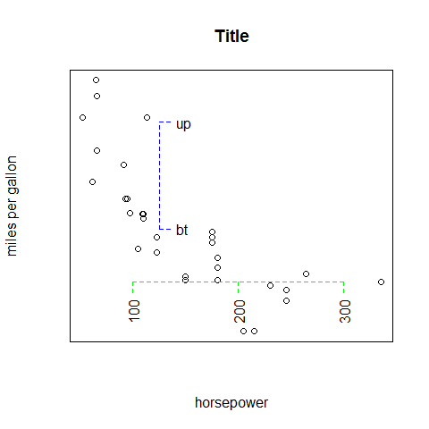
1 2 | # reverse par(las = 1) |
Add layers to the first plot
1 2 3 4 5 6 7 | plot(mpg, main = 'Title', xlab = 'horsepower', ylab = 'miles per gallon') # add lines lines(mpg[1:10], type = 'l', col = 'green') |

Univariate Plots¶
Plot; continuous
1 | plot(mpg, main = 'Title', xlab = 'observations', ylab = 'miles per gallon') |

Plot; categorical
1 | plot(cyl, main = 'Title', xlab = 'observations', ylab = 'cylinders') |
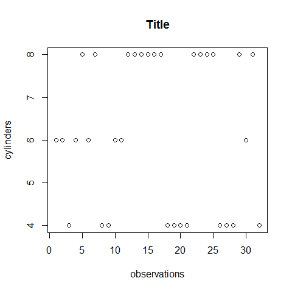
QQnorm; continuous
1 | qqnorm(mpg, main = 'Title', xlab = 'observations', ylab = 'cylinders') |

QQnorm; categorical
1 | qqnorm(cyl, main = 'Title', xlab = 'observations', ylab = 'cylinders') |

Stripchart; continuous
1 | stripchart(mpg, main = 'Title', xlab = 'miles per gallon') |

Stripchart; categorical
1 | stripchart(cyl, main = 'Title', xlab = 'cylinders') |

Barplot (vertical); continuous
1 | barplot(mpg[1:10], main = 'Title', xlab = 'observations', ylab = 'miles per gallon') |
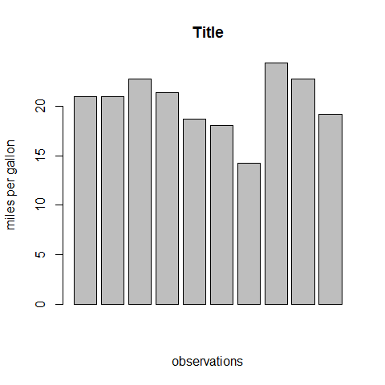
Barplot (horizontal); categorical
1 | barplot(cyl[1:10], main = 'Title', horiz = TRUE, xlab = 'cylinders', ylab = 'observations') |

Barplots options
Group with table().
1 2 | counts <- table(cyl) counts |
1 2 3 | ## cyl ## 4 6 8 ## 11 7 14 |
1 | barplot(counts, main = 'Title', horiz = TRUE, xlab = 'count', names.arg = c('4 Cyl', '6 Cyl', '8 Cyl')) |

1 2 | counts <- table(vs, gear) counts |
1 2 3 4 | ## gear ## vs 3 4 5 ## 0 12 2 4 ## 1 3 10 1 |
1 | barplot(counts, main = 'Title', xlab = 'gearbox', col = c('darkblue', 'red'), legend = rownames(counts)) |

1 2 | counts <- table(vs, gear) counts |
1 2 3 4 | ## gear ## vs 3 4 5 ## 0 12 2 4 ## 1 3 10 1 |
1 | barplot(counts, main = 'Title', xlab='gearbox', col = c('darkblue', 'red'), legend = rownames(counts), beside = TRUE) |

Group with aggregate().
1 | aggregate(mtcars, by = list(cyl, vs), FUN = mean, na.rm = TRUE) |
1 2 3 4 5 6 7 8 9 10 11 12 | ## Group.1 Group.2 mpg cyl disp hp drat wt qsec ## 1 4 0 26.00000 4 120.30 91.0000 4.430000 2.140000 16.70000 ## 2 6 0 20.56667 6 155.00 131.6667 3.806667 2.755000 16.32667 ## 3 8 0 15.10000 8 353.10 209.2143 3.229286 3.999214 16.77214 ## 4 4 1 26.73000 4 103.62 81.8000 4.035000 2.300300 19.38100 ## 5 6 1 19.12500 6 204.55 115.2500 3.420000 3.388750 19.21500 ## vs am gear carb ## 1 0 1.0000000 5.000000 2.000000 ## 2 0 1.0000000 4.333333 4.666667 ## 3 0 0.1428571 3.285714 3.500000 ## 4 1 0.7000000 4.000000 1.500000 ## 5 1 0.0000000 3.500000 2.500000 |
1 2 3 4 5 6 | par(las = 2) # make label text perpendicular to axis par(mar = c(5, 8, 4, 2)) # increase y-axis margin. counts <- table(mtcars$gear) barplot(counts, main = 'Car Distribution', horiz = TRUE, names.arg = c('3 Gears', '4 Gears', '5 Gears'), cex.names = 0.8) |

1 2 | # reverse par(las = 1) |
Colors.
1 2 3 4 5 6 | library(RColorBrewer) par(mfrow = c(2, 1)) barplot(iris$Petal.Length) barplot(table(iris$Species, iris$Sepal.Length), col = brewer.pal(3, 'Set1')) |

1 | par(mfrow = c(1, 1)) |
Pie Chart
Avoid!
Dotchart; continuous
1 | dotchart(mpg, main = 'Title', xlab = 'miles per gallon', ylab = 'observations') |

Dotchart; categorical
1 | dotchart(cyl, main = 'Title', xlab = 'cylinders', ylab = 'observations') |

Dotchart options
1 | dotchart(mpg,labels = row.names(mtcars), cex = 0.7, main = 'Title', xlab = 'miles per gallon') |

1 2 3 4 5 6 7 8 9 10 | # sort by mpg x <- mtcars[order(mpg),] # must be factors x$cyl <- factor(x$cyl) x$color[x$cyl == 4] <- 'red' x$color[x$cyl == 6] <- 'blue' x$color[x$cyl == 8] <- 'darkgreen' dotchart(x$mpg, labels = row.names(x), cex = 0.7, groups = x$cyl, main = 'Title', xlab = 'miles per gallon', gcolor = 'black', color = x$color) |

More with the hmisc package and panel.dotplot() and in the lattice
package section.
Boxplot; continuous
1 | boxplot(mpg, main = 'Title', xlab = 'miles per gallon', ylab = 'observations') |

Stem; continuous
1 | stem(mpg) |
1 2 3 4 5 6 7 8 9 10 11 12 13 14 15 | ## ## The decimal point is at the | ## ## 10 | 44 ## 12 | 3 ## 14 | 3702258 ## 16 | 438 ## 18 | 17227 ## 20 | 00445 ## 22 | 88 ## 24 | 4 ## 26 | 03 ## 28 | ## 30 | 44 ## 32 | 49 |
Histogram; continuous
1 | hist(mpg, main = 'Title', xlab = 'miles per gallon - bins', ylab = 'count') |
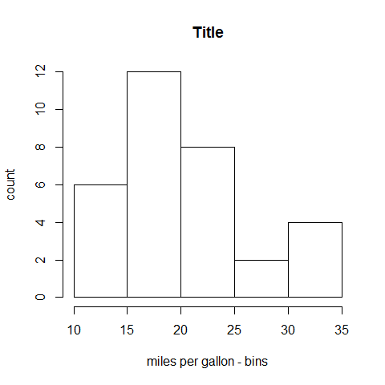
Histogram; categorical
1 | hist(cyl, main = 'Title', xlab = 'cylinders - bins', ylab = 'count') |
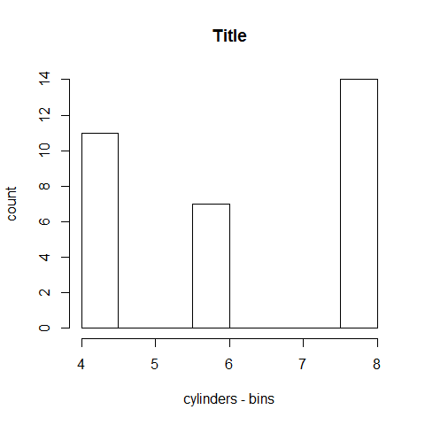
Histogram options
1 | hist(mpg, breaks = 12, col = 'red') |

1 2 3 4 5 6 7 8 9 | x <- mpg h <- hist(x, breaks = 10, main = 'Title', xlab = 'miles per gallon') xfit <- seq(min(x), max(x),length = 40) yfit <- dnorm(xfit, mean = mean(x), sd = sd(x)) yfit <- yfit*diff(h$mids[1:2])*length(x) lines(xfit, yfit, col = 'blue', lwd = 2) |

Colors.
1 2 3 4 5 6 7 8 9 10 | library(RColorBrewer) par(mfrow = c(2, 3)) hist(VADeaths, breaks = 10, col = brewer.pal(3, 'Set3'), main = '3, Set3') hist(VADeaths, breaks = 4, col = brewer.pal(3, 'Set2'), main = '3, Set2') hist(VADeaths, breaks = 8, col = brewer.pal(3, 'Set1'), main = '3, Set1') hist(VADeaths, breaks = 2, col = brewer.pal(8, 'Set3'), main = '8, Set3') hist(VADeaths, breaks = 10, col = brewer.pal(8, 'Greys'), main = '8, Greys') hist(VADeaths, breaks = 10, col = brewer.pal(8, 'Greens'), main = '8, Greens') |

1 | par(mfrow = c(1, 1)) |
Density Plot; continuous
1 | plot(density(mpg), main = 'Title') |

1 2 3 | plot(density(mpg), main = 'Title') polygon(density(mpg), col = 'red', border = 'blue') |

1 2 3 4 5 6 | d1 <- density(mtcars$mpg) plot(d1) rug(mtcars$mpg) lines(density(mtcars$mpg, d1$bw/2), col = 'green') lines(density(mtcars$mpg, d1$bw/5), col = 'blue') |
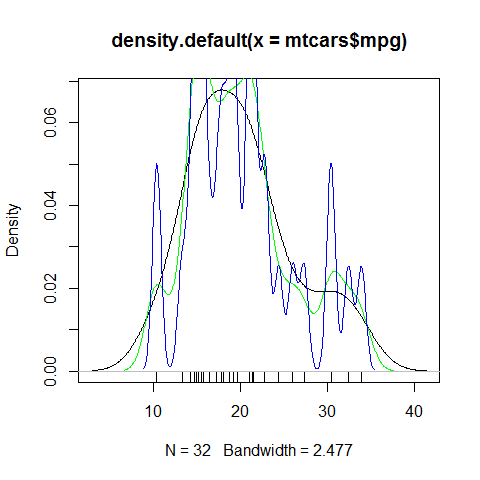
Bivariate (Multivariate) Plots¶
Plot, continuous/continuous
1 | plot(mpg, hp, main = 'Title', xlab = 'miles per gallon', ylab = 'horsepowers') |

Plot, continuous/categorical
1 | plot(mpg, cyl, main = 'Title', xlab = 'miles per gallon', ylab = 'cylinders') |

Plot options
1 2 3 4 | plot(wt, mpg, main = 'Title', xlab = 'weight', ylab = 'miles per gallon ') abline(lm(mpg ~ wt), col = 'red') # regression lines(lowess(wt, mpg), col = 'blue') # lowess line |

SmoothScatter; continuous/continuous
1 | smoothScatter(mpg, hp, main = 'Title', xlab = 'miles per gallon', ylab = 'horsepowers') |

Sunflowerplot; categorical/categorical
Special symbols at each location: one observation = one dot; more observations = cross, star, etc.
1 | sunflowerplot(gear, cyl, main = 'Title', xlab = 'gearbox', ylab = 'cylinders') |

Boxplot
1 | boxplot(mpg ~ cyl, main = 'Title', xlab = 'cylinders', ylab = 'miles per gallon') |
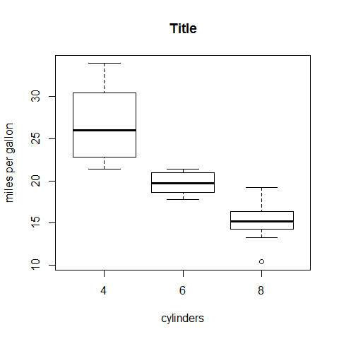
Colors.
1 2 3 4 5 6 | library(RColorBrewer) par(mfrow = c(1, 2)) boxplot(iris$Sepal.Length, col = 'red') boxplot(iris$Sepal.Length ~ iris$Species, col = topo.colors(3)) |

1 | par(mfrow = c(1, 1)) |
1 2 3 4 5 6 | library(dplyr) data(Pima.tr2, package = 'MASS') PimaV <- select(Pima.tr2, glu:age) boxplot(scale(PimaV), pch = 16, outcol = 'red') |

Boxplot options
1 2 3 4 5 6 7 | four <- subset(mpg, cyl == 4) six <- subset(mpg, cyl == 6) eight <- subset(mpg, cyl == 8) boxplot(four, six, eight, main = 'Title', ylab = 'miles per gallon') axis(1, at = c(1, 2, 3), labels = c('4 Cyl', '6 Cyl', '8 Cyl')) |

Dotchart
1 2 | counts <- table(gear, cyl) counts |
1 2 3 4 5 | ## cyl ## gear 4 6 8 ## 3 1 2 12 ## 4 8 4 0 ## 5 2 1 2 |
1 | dotchart(counts, main = 'Title', xlab = 'count', ylab = 'cylinders/gearbox') |

1 2 | counts <- table(cyl, gear) counts |
1 2 3 4 5 | ## gear ## cyl 3 4 5 ## 4 1 8 2 ## 6 2 4 1 ## 8 12 0 2 |
1 | dotchart(counts, main = 'Title', xlab = 'count', ylab = 'gearbox/cylinders') |

Barplot with its options
Vertical or horizontal. The legend as well can be horizontal or vertical.
1 2 | counts <- table(gear, cyl) counts |
1 2 3 4 5 | ## cyl ## gear 4 6 8 ## 3 1 2 12 ## 4 8 4 0 ## 5 2 1 2 |
1 2 3 4 | barplot(counts, main = 'Title', xlab = 'cylinders', ylab = 'count', ylim = c(0, 20), col = terrain.colors(3)) legend('topleft', inset = .04, title = 'gearbox', c('3','4','5'), fill = terrain.colors(3), horiz = TRUE) |

1 2 | counts <- table(gear, cyl) counts |
1 2 3 4 5 | ## cyl ## gear 4 6 8 ## 3 1 2 12 ## 4 8 4 0 ## 5 2 1 2 |
1 | barplot(counts, main = 'Title', xlab = 'cylinders', ylab = 'count', ylim = c(0, 25), col = terrain.colors(3), legend = rownames(counts)) |

1 2 | counts <- table(gear, cyl) counts |
1 2 3 4 5 | ## cyl ## gear 4 6 8 ## 3 1 2 12 ## 4 8 4 0 ## 5 2 1 2 |
1 | barplot(counts, main = 'Title', xlab = 'cylinders', ylab = 'count', ylim = c(0, 20), col = terrain.colors(3), legend = rownames(counts), beside = TRUE) |

Spineplot
‘Count’ = blocks; categorical (with factors).
1 2 3 4 | cyl2 <- as.factor(cyl) # mandatory for the y gear2 <- as.factor(gear) spineplot(gear2, cyl2, main = 'Title', xlab = 'gearbox', ylab = 'cylinders') |

Count = blocks; continuous.
1 | spineplot(mpg, cyl2, main = 'Title', xlab = 'miles per gallon', ylab = 'cylinders') |

Mosaicplot
Count = blocks.
1 2 | counts <- table(gear, cyl) counts |
1 2 3 4 5 | ## cyl ## gear 4 6 8 ## 3 1 2 12 ## 4 8 4 0 ## 5 2 1 2 |
1 | mosaicplot(counts, main = 'Title', xlab = 'gearbox', ylab = 'cylinders') |

Multivariate Plots¶
Pairs
1 | pairs( ~mpg + disp + hp) |

Coplot
1 | coplot(mpg ~ hp | wt) |

Correlograms
1 2 3 | library(corrgram) corrgram(mtcars, order = TRUE, lower.panel = panel.shade, upper.panel=panel.pie, text.panel = panel.txt, main = 'Car Milage Data in PC2/PC1 Order') |

Plot a dataset with colors
1 2 3 | library(RColorBrewer) plot(iris, col = brewer.pal(3, 'Set1')) |

Stars
The star branches are explanatory; be careful with the interpretation! Well-advised for visual and pattern exploration.
1 | mtcars[1:4, c(1, 4, 6)] |
1 2 3 4 5 | ## mpg hp wt ## Mazda RX4 21.0 110 2.620 ## Mazda RX4 Wag 21.0 110 2.875 ## Datsun 710 22.8 93 2.320 ## Hornet 4 Drive 21.4 110 3.215 |
1 | stars(mtcars[1:4, c(1, 4, 6)]) |

Trivariate plots
image().contour().filled.contour().persp().symbols().
Times Series¶
Add packages: zoo and xts.
Basics
1 | plot(AirPassengers, type = 'l') |
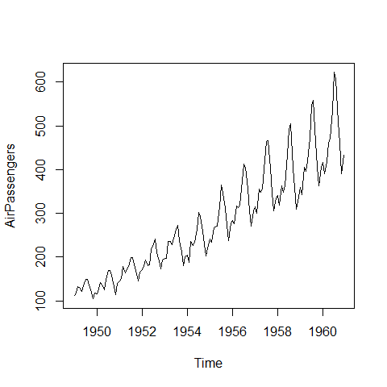
Change the type =
1 2 3 4 5 6 | y1 <- rnorm(100) par(mfrow = c(2, 1)) plot(y1, type = 'p', main = 'p vs l') plot(y1, type = 'l') |

1 2 | plot(y1, type = 'l', main = 'l vs h') plot(y1, type = 'h') |

1 2 | plot(y1, type = 'l', lty = 3, main = 'l 3 vs o') plot(y1, type = 'o') |

1 2 | plot(y1, type = 'b', main = 'b vs c') plot(y1, type = 'c') |

1 2 | plot(y1, type = 's', main = 's vs S') plot(y1, type = 'S') |

1 2 | # reverse par(mfrow = c(1, 1)) |
Add a box
1 2 3 4 5 6 7 8 9 10 11 12 13 14 15 16 | y1 <- rnorm(100) y2 <- rnorm(100) par(mfrow = (c(2, 1))) plot(y1, type = 'l', axes = FALSE, xlab = '', ylab = '', main = '') box(col = 'gray') lines(x = c(20, 20, 40, 40), y = c(-7, max(y1), max(y1), -7), lwd = 3, col = 'gray') plot(y2, type = 'l', axes = FALSE, xlab = '', ylab = '', main = '') box(col = 'gray') lines(x = c(20, 20, 40, 40), y = c(7, min(y2), min(y2), 7), lwd = 3, col = 'gray') |

1 2 | # reverse par(mfrow = c(1,1)) |
Add lines and text within the plot
1 2 3 4 5 6 7 8 9 10 11 12 13 14 15 | y1 <- rnorm(100) # x goes from 0 to 100 # xaxt = 'n' remove the x ticks plot(y1, type = 'l', lwd = 2, lty = 'longdash', main = 'Title', ylab = 'y', xlab = 'time', xaxt = 'n') abline(h = 0, lty = 'longdash') abline(v = 20, lty = 'longdash') abline(v = 50, lty = 'longdash') abline(v = 95, lty = 'longdash') text(17, 1.5, srt = 90, adj = 0, labels = 'Tag 1', cex = 0.8) text(47, 1.5, srt = 90, adj = 0, labels = 'Tag a', cex = 0.8) text(92, 1.5, srt = 90, adj = 0, labels = 'Tag alpha', cex = 0.8) |
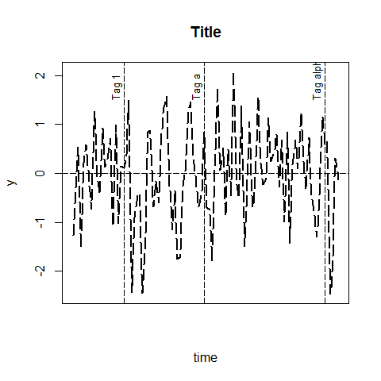
A comprehensive example
1 2 | # new data head(Orange) |
1 2 3 4 5 6 7 | ## Tree age circumference ## 1 1 118 30 ## 2 1 484 58 ## 3 1 664 87 ## 4 1 1004 115 ## 5 1 1231 120 ## 6 1 1372 142 |
1 2 3 4 5 6 7 8 9 10 11 12 13 14 15 16 17 18 19 20 21 22 23 24 25 26 27 28 | # convert factor to numeric for convenience Orange$Tree <- as.numeric(Orange$Tree) ntrees <- max(Orange$Tree) # get the range for the x and y axis xrange <- range(Orange$age) yrange <- range(Orange$circumference) # set up the plot plot(xrange, yrange, type = 'n', xlab = 'Age (days)', ylab = 'Circumference (mm)' ) colors <- rainbow(ntrees) linetype <- c(1:ntrees) plotchar <- seq(18, 18 + ntrees, 1) # add lines for (i in 1:ntrees) { tree <- subset(Orange, Tree == i) lines(tree$age, tree$circumference, type = 'b', lwd = 1.5, lty = linetype[i], col = colors[i], pch = plotchar[i]) } # add a title and subtitle title('Tree Growth', 'example of line plot') # add a legend legend(xrange[1], yrange[2], 1:ntrees, cex = 0.8, col = colors, pch = plotchar, lty = linetype, title = 'Tree') |

Regressions and Residual Plots¶
1 2 3 4 | # first regr <- lm(mpg ~ hp) summary(regr) |
1 2 3 4 5 6 7 8 9 10 11 12 13 14 15 16 17 18 | ## ## Call: ## lm(formula = mpg ~ hp) ## ## Residuals: ## Min 1Q Median 3Q Max ## -5.7121 -2.1122 -0.8854 1.5819 8.2360 ## ## Coefficients: ## Estimate Std. Error t value Pr(>|t|) ## (Intercept) 30.09886 1.63392 18.421 < 2e-16 *** ## hp -0.06823 0.01012 -6.742 1.79e-07 *** ## --- ## Signif. codes: 0 '***' 0.001 '**' 0.01 '*' 0.05 '.' 0.1 ' ' 1 ## ## Residual standard error: 3.863 on 30 degrees of freedom ## Multiple R-squared: 0.6024, Adjusted R-squared: 0.5892 ## F-statistic: 45.46 on 1 and 30 DF, p-value: 1.788e-07 |
1 2 | plot(mpg ~ hp) abline(regr) |

1 2 3 4 | par(mfrow = c(2, 2)) # then plot(regr) |

1 2 | # reverse par(mfrow = c(1, 1)) |
The lattice and latticeExtra Packages¶
1 | library(lattice) |
Coloring¶
1 2 | # Show the default settings show.settings() |

1 2 3 4 5 6 | # Save the default theme mytheme <- trellis.par.get() # Turn the B&W trellis.par.set(canonical.theme(color = FALSE)) show.settings() |

Documentation¶
A note on reordering the levels (factors)¶
1 2 3 4 | # start cyl <- mtcars$cyl cyl <- as.factor(cyl) cyl |
1 2 | ## [1] 6 6 4 6 8 6 8 4 4 6 6 8 8 8 8 8 8 4 4 4 4 8 8 8 8 4 4 4 8 6 8 4 ## Levels: 4 6 8 |
1 | levels(cyl) |
1 | ## [1] "4" "6" "8" |
1 2 3 4 5 | # option 1 cyl <- factor(cyl, levels = c('8', '6', '4')) # or levels = 3:1 # or levels = letters[3:1] levels(cyl) |
1 | ## [1] "8" "6" "4" |
1 2 3 4 5 | cyl <- mtcars$cyl cyl <- as.factor(cyl) # option 2 cyl <- reorder(cyl, new.order = 3:1) levels(cyl) |
1 | ## [1] "8" "6" "4" |
1 2 3 4 | library(lattice) # normalized x-axis for comparison barchart(Class ~ Freq | Sex + Age, data = as.data.frame(Titanic), groups = Survived, stack = TRUE, layout = c(4, 1), auto.key = list(title = 'Survived', columns = 2)) |

1 2 | # free x-axis barchart(Class ~ Freq | Sex + Age, data = as.data.frame(Titanic), groups = Survived, stack = TRUE, layout = c(4, 1), auto.key = list(title = 'Survived', columns = 2), scales = list(x = 'free')) |

1 2 3 4 | # or bc.titanic <- barchart(Class ~ Freq | Sex + Age, data = as.data.frame(Titanic), groups = Survived, stack = TRUE, layout = c(4, 1), auto.key = list(title = 'Survived', columns = 2), scales = list(x = 'free')) bc.titanic |

1 2 3 4 5 | # add bg grid update(bc.titanic, panel = function(...) { panel.grid(h = 0, v = -1) panel.barchart(...) }) |
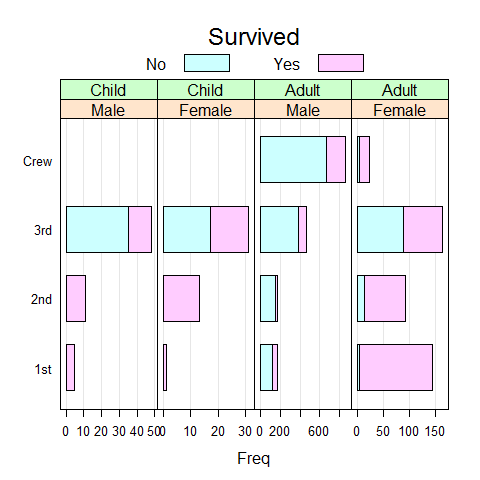
1 2 3 4 | # remove lines update(bc.titanic, panel = function(...) { panel.barchart(..., border = 'transparent') }) |

1 2 | # or update(bc.titanic, border = 'transparent') |

1 2 | Titanic1 <- as.data.frame(as.table(Titanic[, , 'Adult' ,])) Titanic1 |
1 2 3 4 5 6 7 8 9 10 11 12 13 14 15 16 17 | ## Class Sex Survived Freq ## 1 1st Male No 118 ## 2 2nd Male No 154 ## 3 3rd Male No 387 ## 4 Crew Male No 670 ## 5 1st Female No 4 ## 6 2nd Female No 13 ## 7 3rd Female No 89 ## 8 Crew Female No 3 ## 9 1st Male Yes 57 ## 10 2nd Male Yes 14 ## 11 3rd Male Yes 75 ## 12 Crew Male Yes 192 ## 13 1st Female Yes 140 ## 14 2nd Female Yes 80 ## 15 3rd Female Yes 76 ## 16 Crew Female Yes 20 |
1 | barchart(Class ~ Freq | Sex, Titanic1, groups = Survived, stack = TRUE, auto.key = list(title = 'Survived', columns = 2)) |

1 2 3 4 5 | Titanic2 <- reshape(Titanic1, direction = 'wide', v.names = 'Freq', idvar = c('Class', 'Sex'), timevar = 'Survived') names(Titanic2) <- c('Class', 'Sex', 'Dead', 'Alive') barchart(Class ~ Dead + Alive | Sex, Titanic2, stack = TRUE, auto.key = list(columns = 2)) |

Uni-, Bi-, Multivariate Plots¶
Barchart
Like barplot().
1 2 | # y ~ x barchart(mpg ~ hp, main = 'Title', xlab = 'horsepowers', ylab = 'miles per gallon') |

1 2 | # y ~ x barchart(mpg ~ hp, main = 'Title', xlab = 'horsepowers', ylab = 'miles per gallon', horizontal = FALSE) |

1 | barchart(VADeaths, groups = FALSE, layout = c(1, 4), aspect = 0.7, reference =FALSE, main = 'Title', xlab = 'rate per 100') |

1 2 3 | data(postdoc, package = 'latticeExtra') barchart(prop.table(postdoc, margin = 1), xlab = 'Proportion', auto.key = list(adj = 1)) |

Change layout = c(x, y, page)
1 | barchart(mpg ~ hp | factor(cyl), main = 'Title', xlab = 'horsepowers', ylab = 'cylinders - miles per gallon', layout = c(1,3)) |
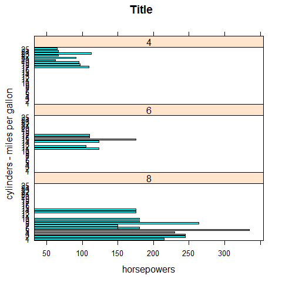
1 | barchart(mpg ~ hp | factor(cyl), main = 'Title', xlab = 'cylinders - horsepowers', ylab = 'miles per gallon', layout = c(3,1)) |

Change aspect = 1
1 for square.
1 | barchart(mpg ~ hp | factor(cyl), main = 'Title', xlab = 'horsepowers', ylab = 'miles per gallon', layout = c(3,1), aspect = 1) |

Colors
1 | barchart(mpg ~ hp, group = cyl, auto.key = list(space = 'right'), main = 'Title', xlab = 'horsepowers', ylab = 'miles per gallon') |

shingle(); control the ranges.equal.count(); grid.
Dotplot
Like dotchart().
1 | dotplot(mpg, main = 'Title', xlab = 'miles per gallon') |

1 | dotplot(factor(cyl) ~ mpg, main = 'Title', xlab = 'miles per gallon', ylab = 'cylinders') |

1 | dotplot(factor(cyl) ~ mpg | factor(gear), main = 'Title', xlab = 'gearbox - miles per gallon', ylab = 'cylinders', layout = c(3,1)) |
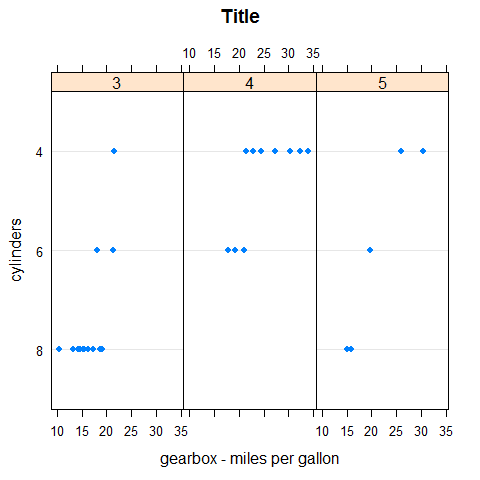
1 | dotplot(factor(cyl) ~ mpg | factor(gear), main = 'Title', xlab = 'miles per gallon', ylab = 'gearbox - cylinders', layout = c(1,3), aspect = 0.3) |

1 | dotplot(factor(cyl) ~ mpg | factor(gear), main = 'Title', xlab = 'miles per gallon', ylab = 'gearbox - cylinders', layout = c(1,3), aspect = 0.3, origin = 0) |

1 | dotplot(factor(cyl) ~ mpg | factor(gear), main = 'Title', xlab = 'miles per gallon', ylab = 'gearbox - cylinders', layout = c(1,3), aspect = 0.3, origin = 0, type = c('p', 'h')) |

Set auto.key.
1 2 3 4 5 6 7 8 9 | # maybe we'll want this later old.pars <- trellis.par.get() #trellis.par.set(superpose.symbol = list(pch = c(1,3), col = 12:14)) trellis.par.set(superpose.symbol = list(pch = c(1,3), col = 1)) # Optionally put things back how they were #trellis.par.set(old.pars) |
Use auto.key.
1 | dotplot(factor(cyl) ~ mpg | factor(gear), main = 'Title', xlab = 'miles per gallon', ylab = 'gearbox - cylinders', layout = c(1,3), groups = vs, auto.key = list(space = 'right')) |

1 | trellis.par.set(old.pars) |
1 2 3 | trellis.par.set(superpose.symbol = list(pch = c(1,3), col = 1)) dotplot(variety ~ yield | site, barley, layout = c(1, 6), aspect = c(0.7), groups = year, auto.key = list(space = 'right')) |
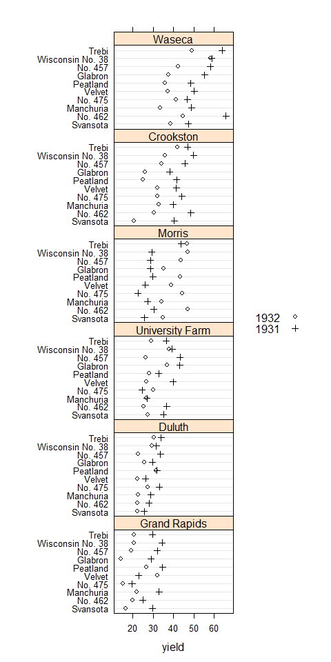
1 | trellis.par.set(old.pars) |
Vertical.
1 | dotplot(mpg ~ factor(cyl) | factor(gear), main = 'Title', xlab = 'cylinders', ylab = 'gearbox - miles per gallon', layout = c(1,3), aspect = 0.3) |

1 2 3 4 5 | library(readr) density <- read_csv('density.csv') density$Density <- as.numeric(density$Density) dotplot(reorder(MetropolitanArea, Density) ~ Density, density, type = c('p', 'h'), main = 'Title', xlab = 'Population Density (pop / sq.mi)') |

1 | dotplot(reorder(MetropolitanArea, Density) ~ Density | Region, density, type = c('p', 'h'), strip = FALSE, strip.left = TRUE, layout = c(1, 3), scales = list(y = list(relation = 'free')), main = 'Title', xlab = 'Population Density (pop / sq.mi)') |

Stripplot
Like stripchart().
1 | stripplot(mpg, main = 'Title', xlab = 'miles per gallon') |

1 | stripplot(factor(cyl) ~ mpg, main = 'Title', xlab = 'miles per gallon', ylab = 'cylinders') |

1 | stripplot(factor(cyl) ~ mpg | factor(gear), main = 'Title', xlab = 'gearbox - miles per gallon', ylab = 'cylinders', layout = c(1,3)) |

1 | stripplot(factor(cyl) ~ mpg | factor(gear), main = 'Title', xlab = 'gearbox - miles per gallon', ylab = 'cylinders', layout = c(1,3), groups = vs, auto.key = list(space = 'right')) |

1 | stripplot(mpg ~ factor(cyl) | factor(gear), main = 'Title', xlab = 'cylinders', ylab = 'gearbox - miles per gallon', layout = c(1,3)) |

Histogram
Like hist().
1 | histogram(mpg, main = 'Title', xlab = 'miles per gallon') |

1 | histogram(~mpg | factor(cyl), layout = c(1, 3), main = 'Title', xlab = 'miles per gallon', ylab = 'density') |
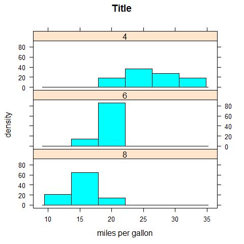
Densityplot
Like plot.density().
1 | densityplot(mpg, main = 'Title', xlab = 'miles per gallon', ylab = 'density') |

1 | densityplot(~mpg | factor(cyl), layout = c(1, 3), main = 'Title', xlab = 'miles per gallon', ylab = 'density') |

ECDFplot
1 2 3 | library(latticeExtra) ecdfplot(mpg, main = 'Title', xlab = 'miles per gallon', ylab = '') |

BWplot
Like boxplot.
1 | bwplot(mpg, main = 'Title', xlab = 'miles per gallon', ylab = 'density') |
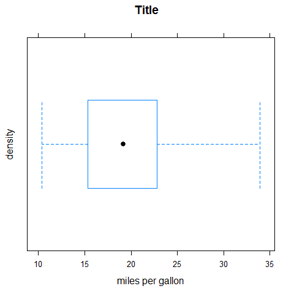
1 | bwplot(factor(cyl) ~ mpg, main = 'Title', xlab = 'miles per gallon', ylab = 'cylinders') |

1 | bwplot(factor(cyl) ~ mpg | factor(gear), main = 'Title', xlab = 'miles per gallon', ylab = 'gearbox - cylinders', layout = c(1,3)) |
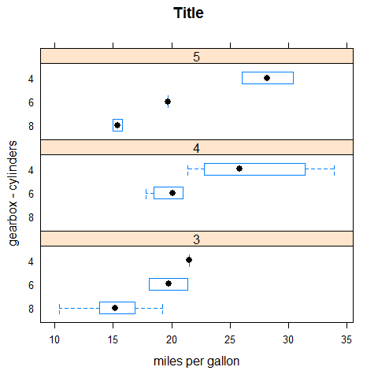
1 | bwplot(mpg ~ factor(cyl) | factor(gear), main = 'Title', xlab = 'gearbox - cylinders', ylab = 'miles per gallon', layout = c(3,1)) |

QQmath
Like qqnorm().
1 | qqmath(mpg, main = 'Title', ylab = 'miles per gallon') |

XYplot
Like plot().
1 | xyplot(mpg ~ disp | factor(cyl), main = 'Title', xlab = 'horsepower', ylab = 'cylinders - miles per gallon', layout = c(1,3)) |
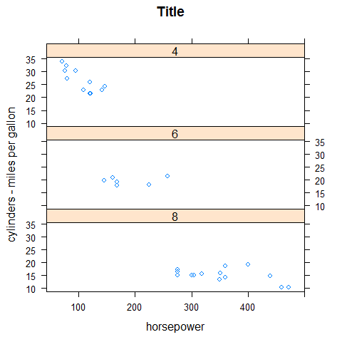
1 | xyplot(mpg ~ disp | factor(cyl), main = 'Title', xlab = 'cylinder - horsepowers', ylab = 'miles per gallon', layout = c(3,1)) |

XYplot options
1 | xyplot(mpg ~ disp | factor(cyl), main = 'Title', xlab = 'cylinder - horsepowers', ylab = 'miles per gallon', layout = c(3,1), aspect = 1) |
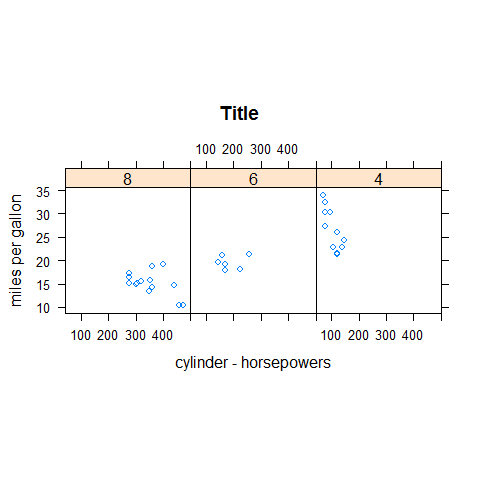
1 | xyplot(mpg ~ disp | factor(cyl), main = 'Title', xlab = 'cylinder - horsepowers', ylab = 'miles per gallon', layout = c(3,1), aspect = 1, scales = list(y = list(at = seq(10, 30, 10)))) |

1 2 3 4 5 6 7 | meanmpg <- mean(mpg) xyplot(mpg ~ disp | factor(cyl), main = 'Title', xlab = 'cylinder - horsepowers', ylab = 'miles per gallon', layout = c(3,1), aspect = 1, panel = function(...) { panel.xyplot(...) panel.abline(h = meanmpg, lty = 'dashed') panel.text(450, meanmpg + 1, 'avg', adj = c(1, 0), cex = 0.7) }) |
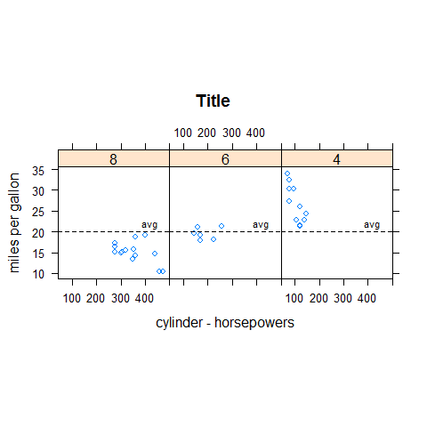
1 2 3 4 | xyplot(mpg ~ disp | factor(cyl), main = 'Title', xlab = 'cylinder - horsepowers', ylab = 'miles per gallon', layout = c(3,1), aspect = 1, panel = function(x, y, ...) { panel.lmline(x, y) panel.xyplot(x, y, ...) }) |
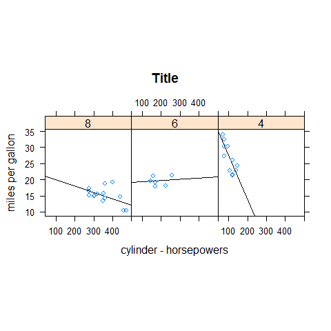
panel.points().panel.lines().panel.segments().panel.arrows().panel.rect().panel.polygon().panel.text().panel.abline().panel.lmline().panel.xyplot().panel.curve().panel.rug().panel.grid().panel.bwplot().panel.histogram().panel.loess().panel.violin().panel.smoothScatter().- …
par.settings.- …
1 2 3 4 5 | library(lattice) data(SeatacWeather, package = 'latticeExtra') xyplot(min.temp + max.temp + precip ~ day | month, ylab = 'Temperature and Rainfall', data = SeatacWeather, layout = c(3,1), type = 'l', lty = 1, col = 'black') |

1 | xyplot(min.temp + max.temp + precip ~ day | month, ylab = 'Temperature and Rainfall', data = SeatacWeather, layout = c(3,1), type = 'p', lty = 1, col = 'black') |
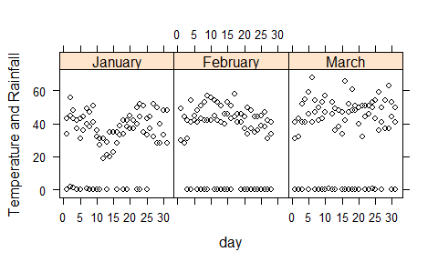
1 | xyplot(min.temp + max.temp + precip ~ day | month, ylab = 'Temperature and Rainfall', data = SeatacWeather, layout = c(3,1), type = 'l', lty = 1, col = 'black') |

1 | xyplot(min.temp + max.temp + precip ~ day | month, ylab = 'Temperature and Rainfall', data = SeatacWeather, layout = c(3,1), type = 'o', lty = 1, col = 'black') |

1 | xyplot(min.temp + max.temp + precip ~ day | month, ylab = 'Temperature and Rainfall', data = SeatacWeather, layout = c(3,1), type = 'r', lty = 1, col = 'black') |
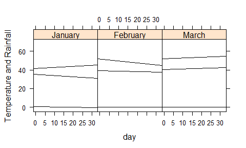
1 | xyplot(min.temp + max.temp + precip ~ day | month, ylab = 'Temperature and Rainfall', data = SeatacWeather, layout = c(3,1), type = 'g', lty = 1, col = 'black') |
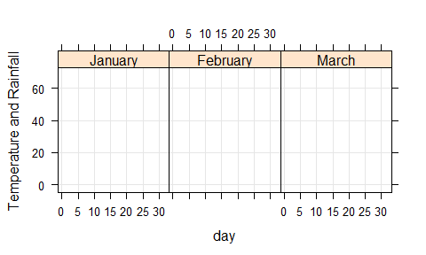
1 | xyplot(min.temp + max.temp + precip ~ day | month, ylab = 'Temperature and Rainfall', data = SeatacWeather, layout = c(3,1), type = 's', lty = 1, col = 'black') |

1 | xyplot(min.temp + max.temp + precip ~ day | month, ylab = 'Temperature and Rainfall', data = SeatacWeather, layout = c(3,1), type = 'S', lty = 1, col = 'black') |

1 | xyplot(min.temp + max.temp + precip ~ day | month, ylab = 'Temperature and Rainfall', data = SeatacWeather, layout = c(3,1), type = 'h', lty = 1, col = 'black') |

1 | xyplot(min.temp + max.temp + precip ~ day | month, ylab = 'Temperature and Rainfall', data = SeatacWeather, layout = c(3,1), type = 'a', lty = 1, col = 'black') |
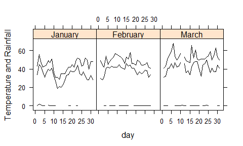
1 | xyplot(min.temp + max.temp + precip ~ day | month, ylab = 'Temperature and Rainfall', data = SeatacWeather, layout = c(3,1), type = 'smooth', lty = 1, col = 'black') |

1 | xyplot(mpg ~ hp, main = 'Title', xlab = 'horsepowers', ylab = 'miles per gallon') |

1 | xyplot(mpg ~ hp, main = 'Title', xlab = 'horsepowers', ylab = 'miles per gallon', type = 'o') |
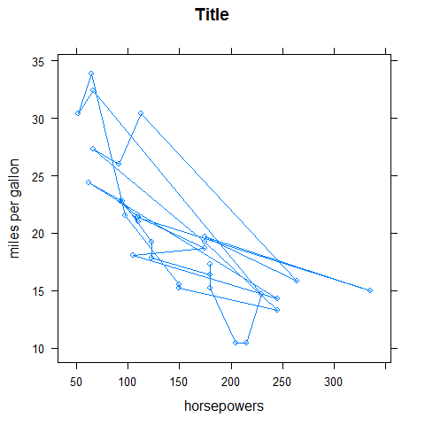
1 | xyplot(mpg ~ hp, main = 'Title', xlab = 'horsepowers', ylab = 'miles per gallon', type = 'o', pch = 16, lty = 'dashed') |
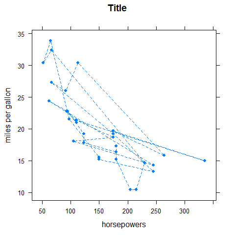
1 | xyplot(mpg ~ hp, main = 'Title', xlab = 'horsepowers', ylab = 'miles per gallon') |
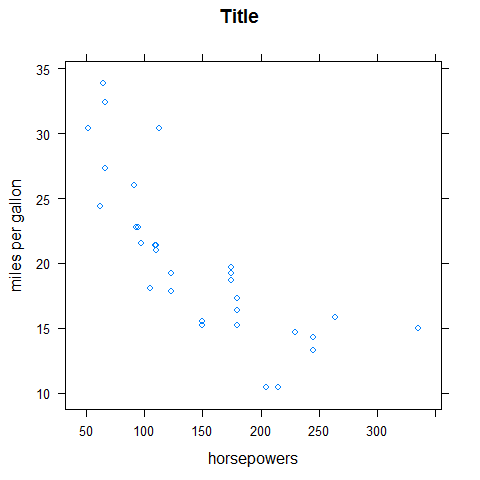
1 2 3 | data(USAge.df, package = 'latticeExtra') xyplot(Population ~ Age | factor(Year), USAge.df, groups = Sex, type = c('l', 'g'), auto.key = list(points = FALSE, lines = TRUE, columns = 2), aspect = 'xy', ylab = 'Population (millions)', subset = Year %in% seq(1905, 1975, by = 10)) |
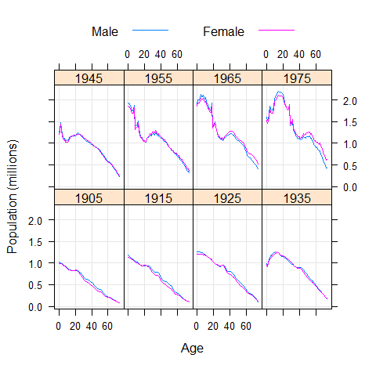
1 | xyplot(Population ~ Year | factor(Age), USAge.df, groups = Sex, type = 'l', strip = FALSE, strip.left = TRUE, layout = c(1, 3), ylab = 'Population (millions)', auto.key = list(lines = TRUE, points = FALSE, columns = 2), subset = Age %in% c(0, 10, 20)) |

1 2 3 4 5 6 7 8 9 | data(USCancerRates, package = 'latticeExtra') xyplot(rate.male ~ rate.female | state, USCancerRates, aspect = 'iso', pch = '.', cex = 2, index.cond = function(x, y) { median(y - x, na.rm = TRUE) }, scales = list(log = 2, at = c(75, 150, 300, 600)), panel = function(...) { panel.grid(h = -1, v = -1) panel.abline(0, 1) panel.xyplot(...) }, xlab = 'a', ylab = 'b') |

1 2 3 4 5 | data(biocAccess, package = 'latticeExtra') baxy <- xyplot(log10(counts) ~ hour | month + weekday, biocAccess, type = c('p', 'a'), as.table = TRUE, pch = '.', cex = 2, col.line = 'black') baxy |

1 2 | library(latticeExtra) useOuterStrips(baxy) |
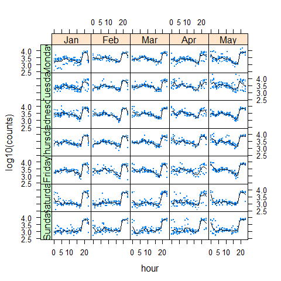
1 | xyplot(sunspot.year, aspect = 'xy', strip = FALSE, strip.left = TRUE, cut = list(number = 4, overlap = 0.05)) |

1 2 3 4 5 | data(biocAccess, package = 'latticeExtra') ssd <- stl(ts(biocAccess$counts[1:(24 * 30 *2)], frequency = 24), 'periodic') xyplot(ssd, main = 'Title', xlab = 'Time (Days)') |

Splom
1 | splom(mtcars[c(1, 3, 6)], groups = cyl, data = mtcars, panel = panel.superpose, key = list(title = 'Three Cylinder Options', columns = 3, points = list(text = list(c('4 Cylinder', '6 Cylinder', '8 Cylinder'))))) |

1 2 3 | trellis.par.set(superpose.symbol = list(pch = c(1,3, 22), col = 1, alpha = 0.5)) splom(~data.frame(mpg, disp, hp, drat, wt, qsec), data = mtcars, groups = cyl, pscales = 0, varnames = c('miles\nper\ngallon', 'displacement\n(cu.in(', 'horsepower', 'rear\naxle\nratio', 'weight', '1/4\nmile\ntime'), auto.key = list(columns = 3, title = 'Title')) |

1 | trellis.par.set(old.pars) |
1 | splom(USArrests) |

1 | splom(~USArrests[c(3,1,2,4)] | state.region, pscales = 0, type = c('g', 'p', 'smooth')) |

Parallel plot
For multivariate continuous data.
1 | parallelplot(~iris[1:4]) |

1 | parallelplot(~iris[1:4], horizontal.axis = FALSE) |

1 | parallelplot(~iris[1:4], scales = list(x = list(rot = 90))) |

1 | parallelplot(~iris[1:4] | Species, iris) |

1 2 | parallelplot(~iris[1:4], iris, groups = Species, horizontal.axis = FALSE, scales = list(x = list(rot = 90))) |

Trivariate plots
Like image(), contour(), filled.contour(), persp(), symbols().
levelplot().contourplot().cloud().wireframe().
Additional Packages¶
The sm Package (density)¶
1 | library(sm) |
Density plot
1 2 3 4 5 6 7 8 9 10 11 | # create value labels cyl.f <- factor(cyl, levels = c(4, 6, 8), labels = c('4 cyl', '6 cyl', '8 cyl')) # plot densities sm.density.compare(mpg, cyl, xlab = 'miles per gallon') title(main = 'Title') # add legend via mouse click colfill <- c(2:(2 + length(levels(cyl.f)))) legend(25, 0.19, levels(cyl.f), fill = colfill) |

The car Package (scatter)¶
1 | library(car) |
Scatter plot
1 | scatterplot(mpg ~ wt | cyl, data = mtcars, xlab = 'weight', ylab = 'miles per gallon', labels = row.names(mtcars)) |

Splom
1 | scatterplotMatrix( ~mpg + disp + drat + wt | cyl, data = mtcars, main = 'Title') |

scatterplotMatrix == spm.
1 | spm( ~mpg + disp + drat + wt | cyl, data = mtcars, main = 'Title') |

The vioplot Package (boxplot)¶
1 | library(vioplot) |
Violin boxplot
1 2 3 4 5 6 7 | x1 <- mpg[mtcars$cyl == 4] x2 <- mpg[mtcars$cyl == 6] x3 <- mpg[mtcars$cyl == 8] vioplot(x1, x2, x3, names = c('4 cyl', '6 cyl', '8 cyl'), col = 'green') title('Title') |

The vcd Package (count, correlation, mosaic)¶
1 | library(vcd) |
The package provides a variety of methods for visualizing multivariate categorical data.
Count
1 2 | counts <- table(gear, cyl) counts |
1 2 3 4 5 | ## cyl ## gear 8 6 4 ## 3 12 2 1 ## 4 0 4 8 ## 5 2 1 2 |
1 | mosaic(counts, shade = TRUE, legend = TRUE) |

Correlation
1 2 | counts <- table(gear, cyl) counts |
1 2 3 4 5 | ## cyl ## gear 8 6 4 ## 3 12 2 1 ## 4 0 4 8 ## 5 2 1 2 |
1 | assoc(counts, shade = TRUE) |

Mosaic
1 2 3 4 5 6 | ucb <- data.frame(UCBAdmissions) ucb <- within(ucb, Accept <- factor(Admit, levels = c('Rejected', 'Admitted'))) library(vcd); library(grid) doubledecker(xtabs(Freq~ Dept + Gender + Accept, data = ucb), gp = gpar(fill = c('grey90', 'steelblue'))) |

1 2 3 | data(Fertility, package = 'AER') doubledecker(morekids ~ age, data = Fertility, gp = gpar(fill = c('grey90', 'green')), spacing = spacing_equal(0)) |

1 | doubledecker(morekids ~ gender1 + gender2, data = Fertility, gp = gpar(fill = c('grey90', 'green'))) |

1 | doubledecker(morekids ~ age + gender1 + gender2, data = Fertility, gp = gpar(fill = c('grey90', 'green')), spacing = spacing_dimequal(c(0.1, 0, 0, 0))) |

The hexbin Package (scatter)¶
1 | library(hexbin) |
Scatter plot
1 2 3 4 5 | # new data data(NHANES) # compare plot(Serum.Iron ~ Transferin, NHANES, main = 'Title', xlab = 'Transferin', ylab = 'Iron') |

1 2 | # with hexbinplot(Serum.Iron ~ Transferin, NHANES, main = 'Title', xlab = 'Transferin', ylab = 'Iron') |

1 | hexbinplot(mpg ~ hp, main = 'Title', xlab = 'horsepowers', ylab = 'miles per gallon') |
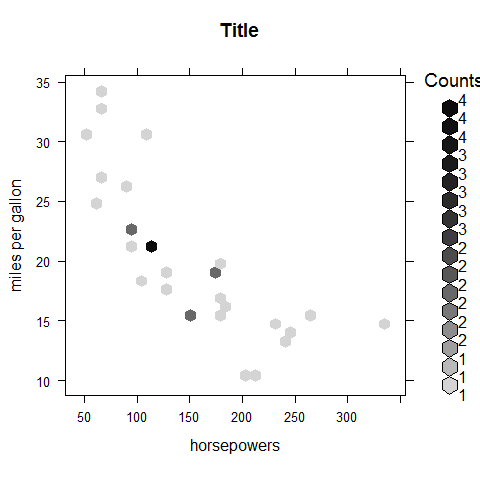
1 2 3 4 5 | x <- rnorm(1000) y <- rnorm(1000) bin <- hexbin(x, y, xbins = 50) plot(bin, main = 'Title') |

1 2 3 4 | x <- rnorm(1000) y <- rnorm(1000) plot(x, y, main = 'Title', col = rgb(0, 100, 0, 50, maxColorValue = 255), pch = 16) |
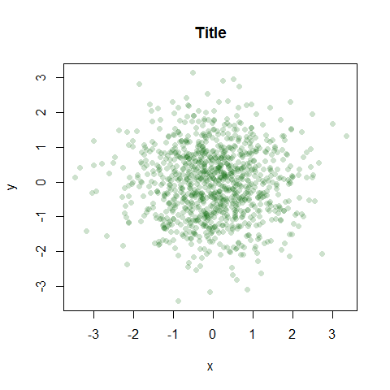
1 2 3 4 5 6 7 | data(Diamonds, package = 'Stat2Data') a = hexbin(Diamonds$PricePerCt, Diamonds$Carat, xbins = 40) library(RColorBrewer) plot(a) |

Colors.
1 2 3 | rf <- colorRampPalette(rev(brewer.pal(12, 'Set3'))) hexbinplot(Diamonds$PricePerCt ~ Diamonds$Carat, colramp = rf) |

Mix lattice and hexbin
1 2 3 | data(gvhd10, package = 'latticeExtra') xyplot(asinh(SSC.H) ~ asinh(FL2.H), gvhd10, aspect = 1, panel = panel.hexbinplot, .aspect.ratio = 1, trans = sqrt) |
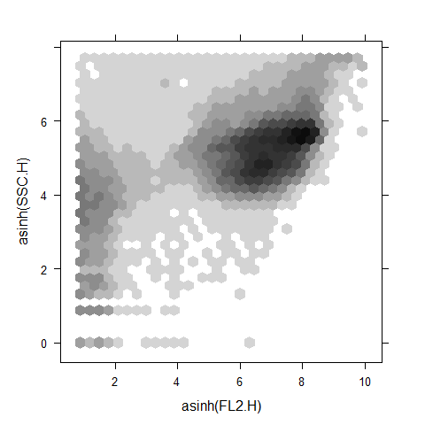
1 | xyplot(asinh(SSC.H) ~ asinh(FL2.H) | Days, gvhd10, aspect = 1, panel = panel.hexbinplot, .aspect.ratio = 1, trans =sqrt) |

The car Package (scatter)¶
1 | library(car) |
Scatter plot
1 2 | scatterplotMatrix(~mpg + disp + drat + wt | cyl, data = mtcars, main = 'Three Cylinder Options') |

The scatterplot3d Package¶
1 | library(scatterplot3d) |
Scatter plot
1 | scatterplot3d(wt, disp, mpg, main = 'Title') |

1 | scatterplot3d(wt, disp, mpg, pch = 16, highlight.3d = TRUE, type = 'h', main = 'Title') |
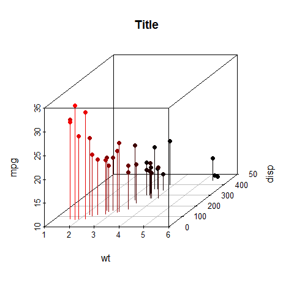
1 2 3 4 5 | s3d <- scatterplot3d(wt, disp, mpg, pch = 16, highlight.3d = TRUE, type = 'h', main = ' Title') fit <- lm(mpg ~ wt + disp) s3d$plane3d(fit) |

The rgl Package (interactive)¶
1 | library(rgl) |
Interactive plot
The plot will open a new window.
1 | plot3d(wt, disp, mpg, col = 'red', size = 3) |
The cluster Package (dendrogram)¶
1 | library(cluster) |
Dendrogram
Use the iris dataset.
1 2 3 | subset <- sample(1:150, 20) cS <- as.character(Sp <- iris$Species[subset]) cS |
1 2 3 4 | ## [1] "setosa" "versicolor" "setosa" "virginica" "virginica" ## [6] "setosa" "setosa" "setosa" "virginica" "setosa" ## [11] "versicolor" "versicolor" "virginica" "setosa" "versicolor" ## [16] "versicolor" "setosa" "virginica" "versicolor" "versicolor" |
1 2 3 4 5 6 7 | cS[Sp == 'setosa'] <- 'S' cS[Sp == 'versicolor'] <- 'V' cS[Sp == 'virginica'] <- 'g' ai <- agnes(iris[subset, 1:4]) plot(ai, label = cS) |
 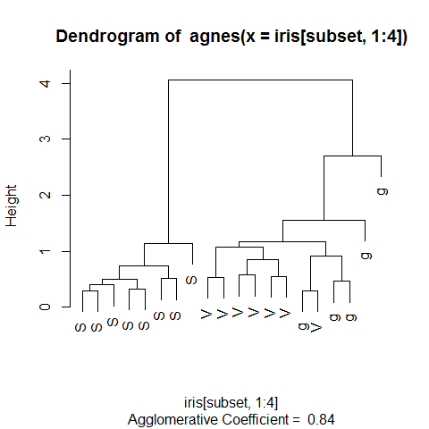
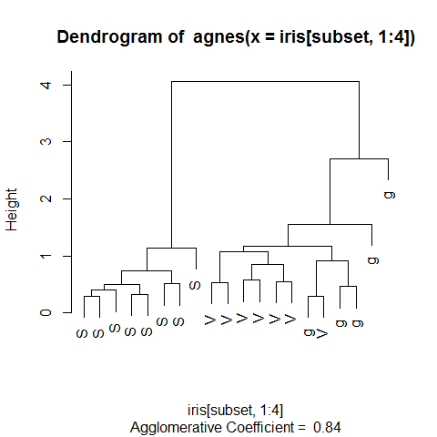
The extracat Package (splom)¶
1 | library(extracat) |
Splom
For missing values. Binary matrix with reordering and filtering of rows
and columns. The x-axis shows the frequency of NA. The y-axis shows the
marginal distribution of NA.
1 2 3 4 | # example 1 data(CHAIN, package = 'mi') visna(CHAIN, sort = 'b') |

1 | summary(CHAIN) |
1 2 3 4 5 6 7 8 9 10 11 12 13 14 15 16 | ## log_virus age income healthy ## Min. : 0.000 Min. :21.00 Min. : 1.000 Min. :16.67 ## 1st Qu.: 0.000 1st Qu.:37.00 1st Qu.: 2.000 1st Qu.:35.00 ## Median : 0.000 Median :43.00 Median : 3.000 Median :45.37 ## Mean : 4.324 Mean :42.56 Mean : 3.377 Mean :44.40 ## 3rd Qu.: 9.105 3rd Qu.:48.00 3rd Qu.: 5.000 3rd Qu.:54.89 ## Max. :13.442 Max. :70.00 Max. :10.000 Max. :70.11 ## NA's :179 NA's :24 NA's :38 NA's :24 ## mental damage treatment ## Min. :0.0000 Min. :1.000 Min. :0.0000 ## 1st Qu.:0.0000 1st Qu.:3.000 1st Qu.:0.0000 ## Median :0.0000 Median :4.000 Median :1.0000 ## Mean :0.2717 Mean :3.578 Mean :0.8602 ## 3rd Qu.:1.0000 3rd Qu.:5.000 3rd Qu.:2.0000 ## Max. :1.0000 Max. :5.000 Max. :2.0000 ## NA's :24 NA's :63 NA's :24 |
1 2 3 4 5 6 7 8 9 | # example 2 data(oly12, package = 'VGAMdata') oly12d <- oly12[, names(oly12) != 'DOB'] oly12a <- oly12 names(oly12a) <- abbreviate(names(oly12), 3) visna(oly12a, sort = 'b') |

1 2 3 4 5 6 | # example 3 data(freetrade, package = 'Amelia') freetrade <- within(freetrade, land1 <- reorder(country, tariff, function(x) sum(is.na(x)))) fluctile(xtabs(is.na(tariff) ~ land1 + year, data = freetrade)) |

1 | ## viewport[base] |
1 2 3 4 | # example 4 data(Pima.tr2, package = 'MASS') visna(Pima.tr2, sort = 'b') |

The ash Package (density)¶
1 | library(ash) |
Density plot
1 | plot(ash1(bin1(mtcars$mpg, nbin = 50)), type = 'l') |
1 | ## [1] "ash estimate nonzero outside interval ab" |

The KernSmooth Package (density)¶
1 | library(KernSmooth) |
Density plot
1 2 3 4 5 | with(mtcars, { hist(mpg, freq = FALSE, main = '', col = 'bisque2', ylab = '') lines(density(mpg), lwd = 2) ks1 <- bkde(mpg, bandwidth = dpik(mpg)) lines(ks1, col = 'red', lty = 5, lwd = 2)}) |
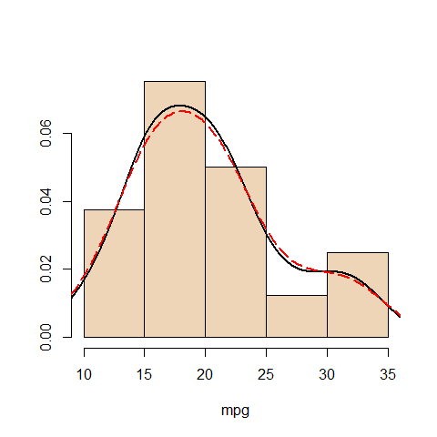
The corrplot Package (correlation)¶
1 | library(corrplot) |
Splom
1 2 3 4 | # Create a correlation matrix for the dataset (9-14 are the '2' variables only) correlations <- cor(mtcars) corrplot(correlations) |